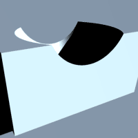
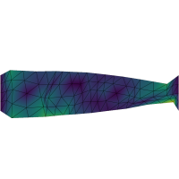

NVIDIA Warp Documentation#
Warp is a Python framework for writing high-performance simulation and graphics code. Warp takes regular Python functions and JIT compiles them to efficient kernel code that can run on the CPU or GPU.
Warp is designed for spatial computing and comes with a rich set of primitives that make it easy to write programs for physics simulation, perception, robotics, and geometry processing. In addition, Warp kernels are differentiable and can be used as part of machine-learning pipelines with frameworks such as PyTorch, JAX and Paddle.
Below are some examples of simulations implemented using Warp:

Quickstart#
The easiest way to install Warp is from PyPI:
$ pip install warp-lang
You can also use pip install warp-lang[examples] to install additional dependencies for running examples
and USD-related features.
The binaries hosted on PyPI are currently built with the CUDA 12 runtime and therefore require a minimum version of the CUDA driver of 525.60.13 (Linux x86-64) or 528.33 (Windows x86-64).
If you require a version of Warp built with the CUDA 13 runtime, you can build Warp from source or install wheels built with the CUDA 13.0 runtime as described in Nightly Builds.
Tutorial Notebooks#
The NVIDIA Accelerated Computing Hub contains the current, actively maintained set of Warp tutorials:
Notebook |
Colab Link |
|---|---|
Additionally, several notebooks in the notebooks directory provide additional examples and cover key Warp features:
Additional Examples#
The warp/examples directory in
the Github repository contains a number of scripts categorized under subdirectories
that show how to implement various simulation methods using the Warp API. Most examples
will generate USD files containing time-sampled animations in the current working directory.
Before running examples, users should ensure that the usd-core, matplotlib, and pyglet packages are installed using:
pip install warp-lang[extras]
These dependencies can also be manually installed using:
pip install usd-core matplotlib pyglet
Examples can be run from the command-line as follows:
python -m warp.examples.<example_subdir>.<example>
Most examples can be run on either the CPU or a CUDA-capable device, but a handful require a CUDA-capable device. These are marked at the top of the example script.
USD files can be viewed or rendered inside NVIDIA Omniverse, Pixar’s UsdView, and Blender. Note that Preview in macOS is not recommended as it has limited support for time-sampled animations.
Built-in unit tests can be run from the command-line as follows:
python -m warp.tests
warp/examples/core#

|

|

|
|
dem |
fluid |
graph capture |
marching cubes |

|

|

|
 |
mesh |
nvdb |
raycast |
raymarch |

|

|

|
|
sample_mesh |
sph |
torch |
wave |
warp/examples/fem#

|

|
||
diffusion 3d |
mixed elasticity |
apic fluid |
streamlines |

|

|
||
distortion energy |
navier stokes |
burgers |
magnetostatics |
|  | |||
adaptive grid |
nonconforming contact |
darcy level-set optimization |
elastic shape optimization |
warp/examples/optim#


warp/examples/tile#


Omniverse#
Omniverse extensions for Warp are available in the extension registry inside
Omniverse Kit or USD Composer.
The omni.warp.core extension installs Warp into the Omniverse Application’s
Python environment, which allows users to import the module in their scripts and nodes.
The omni.warp extension provides a collection of OmniGraph nodes and sample
scenes demonstrating uses of Warp in OmniGraph.
Enabling the omni.warp extension automatically enables the omni.warp.core extension.
Please see the Omniverse Warp Documentation for more details on how to use Warp in Omniverse.
Learn More#
Please see the following resources for additional background on Warp:
The underlying technology in Warp has been used in a number of research projects at NVIDIA including the following publications:
Accelerated Policy Learning with Parallel Differentiable Simulation - Xu, J., Makoviychuk, V., Narang, Y., Ramos, F., Matusik, W., Garg, A., & Macklin, M. (2022)
DiSECt: Differentiable Simulator for Robotic Cutting - Heiden, E., Macklin, M., Narang, Y., Fox, D., Garg, A., & Ramos, F (2021)
gradSim: Differentiable Simulation for System Identification and Visuomotor Control - Murthy, J. Krishna, Miles Macklin, Florian Golemo, Vikram Voleti, Linda Petrini, Martin Weiss, Breandan Considine et al. (2021)
Support#
Problems, questions, and feature requests can be opened on GitHub Issues.
For inquiries not suited for GitHub Issues, please email warp-python@nvidia.com.
Versioning#
Versions take the format X.Y.Z, similar to Python itself:
Increments in X are reserved for major reworks of the project causing disruptive incompatibility (or reaching the 1.0 milestone).
Increments in Y are for regular releases with a new set of features.
Increments in Z are for bug fixes. In principle, there are no new features. Can be omitted if 0 or not relevant.
This is similar to Semantic Versioning minor versions if well-documented and gradually introduced.
Note that prior to 0.11.0, this schema was not strictly adhered to.
License#
Warp is provided under the Apache License, Version 2.0. Please see LICENSE.md for the full license text.
This project will download and install additional third-party open source software projects. Review the license terms of these open source projects before use.
Contributing#
Contributions and pull requests from the community are welcome. Please see the Contribution Guide for more information on contributing to the development of Warp.
Publications & Citation#
Research Using Warp#
Publications using Warp lists academic and research publications that leverage the capabilities of Warp. We encourage you to add your own published work using Warp to this list.
Citing Warp#
If you use Warp in your research, please use the following citation:
@misc{warp2022,
title = {Warp: A High-performance Python Framework for GPU Simulation and Graphics},
author = {Miles Macklin},
month = {March},
year = {2022},
note = {NVIDIA GPU Technology Conference (GTC)},
howpublished = {\url{https://github.com/nvidia/warp}}
}
Full Table of Contents#
User Guide
- Installation
- Basics
- Runtime
- Devices
- Differentiability
- Generics
- Tiles
- Interoperability
- Configuration
- Debugging
- Limitations
- Contribution Guide
- Publications using Warp
- Compatibility & Support
- FAQ
- How does Warp relate to other Python projects for GPU programming, e.g.: Numba, Taichi, cuPy, PyTorch, etc.?
- What are some examples of projects that use Warp?
- Does Warp support all of the Python language?
- When should I call
wp.synchronize()? - What happens when you differentiate a function like
wp.abs(x)? - Does Warp support multi-GPU programming?
- Should I switch to Warp over IsaacGym/PhysX?
- Why aren’t assignments to Warp arrays supported outside of kernels?
- How can I contact the Warp team directly?
- Changelog
- 1.11.1 - 2026-02-01
- 1.11.0 - 2026-01-02
- 1.10.1 - 2025-12-01
- 1.10.0 - 2025-11-02
- 1.9.1 - 2025-10-01
- 1.9.0 - 2025-09-04
- 1.8.1 - 2025-08-01
- 1.8.0 - 2025-07-01
- 1.7.2 - 2025-05-31
- 1.7.1 - 2025-04-30
- 1.7.0 - 2025-03-30
- 1.6.2 - 2025-03-07
- 1.6.1 - 2025-03-03
- 1.6.0 - 2025-02-03
- 1.5.1 - 2025-01-02
- 1.5.0 - 2024-12-02
- 1.4.2 - 2024-11-13
- 1.4.1 - 2024-10-15
- 1.4.0 - 2024-10-01
- 1.3.3 - 2024-09-04
- 1.3.2 - 2024-08-30
- 1.3.1 - 2024-07-27
- 1.3.0 - 2024-07-25
- 1.2.2 - 2024-07-04
- 1.2.1 - 2024-06-14
- 1.2.0 - 2024-06-06
- 1.1.1 - 2024-05-24
- 1.1.0 - 2024-05-09
- 1.0.3 - 2024-04-17
- 1.0.2 - 2024-03-22
- 1.0.1 - 2024-03-15
- 1.0.0 - 2024-03-07
- 0.15.1 - 2024-03-05
- 0.15.0 - 2024-03-04
- 0.14.0 - 2024-02-19
- 0.13.1 - 2024-02-22
- 0.13.0 - 2024-02-16
- 0.12.0 - 2024-02-05
- 0.11.0 - 2024-01-23
- 1.0.0-beta.7 - 2024-01-23
- 1.0.0-beta.6 - 2024-01-10
- 1.0.0-beta.5 - 2023-11-22
- 1.0.0-beta.4 - 2023-11-01
- 1.0.0-beta.3 - 2023-10-19
- 1.0.0-beta.2 - 2023-09-01
- 1.0.0-beta.1 - 2023-08-29
- 0.10.1 - 2023-07-25
- 0.10.0 - 2023-07-05
- 0.9.0 - 2023-06-01
- 0.8.2 - 2023-04-21
- 0.8.1 - 2023-04-13
- 0.8.0 - 2023-04-05
- 0.7.2 - 2023-02-15
- 0.7.1 - 2023-02-14
- 0.7.0 - 2023-02-13
- 0.6.3 - 2023-01-31
- 0.6.2 - 2023-01-19
- 0.6.1 - 2022-12-05
- 0.6.0 - 2022-11-28
- 0.5.1 - 2022-11-01
- 0.5.0 - 2022-10-31
- 0.4.3 - 2022-09-20
- 0.4.2 - 2022-09-07
- 0.4.1 - 2022-08-30
- 0.4.0 - 2022-08-09
- 0.3.2 - 2022-07-19
- 0.3.1 - 2022-07-12
- 0.3.0 - 2022-07-08
- 0.2.3 - 2022-06-13
- 0.2.2 - 2022-05-30
- 0.2.1 - 2022-05-11
- 0.2.0 - 2022-05-02
- 0.1.25 - 2022-03-20
- 0.1.24 - 2022-03-03
- 0.1.23 - 2022-02-17
- 0.1.22 - 2022-02-14
- 0.1.21 - 2022-01-19
- 0.1.20 - 2021-11-02
- 0.1.19 - 2021-10-15
- 0.1.18 - 2021-10-08
- 0.1.17 - 2021-09-30
- 0.1.16 - 2021-09-06
- 0.1.15 - 2021-09-03
- 0.1.14 - 2021-08-09
- 0.1.13 - 2021-07-29
- 0.1.12 - 2021-07-29
- 0.1.11 - 2021-07-28
- 0.1.10 - 2021-07-28
- 0.1.9 - 2021-07-21
- 0.1.8 - 2021-07-14
- 0.1.7 - 2021-07-05
- 0.1.6 - 2021-06-14
- 0.1.5 - 2021-06-14
- 0.1.4 - 2021-06-10
- 0.1.3 - 2021-06-09
- 0.1.2 - 2021-06-03
- 0.1.1 - 2021-05-18
- 0.1.0 - 2021-05-17
Deep Dive
Domain Modules
API Reference
- warp
- Submodules
- Additional Submodules
- Type Annotations
- Data Types
- Scalars
- Vectors
- warp.vec2
- warp.vec3
- warp.vec4
- warp.vec2b
- warp.vec2d
- warp.vec2f
- warp.vec2h
- warp.vec2i
- warp.vec2l
- warp.vec2s
- warp.vec2ub
- warp.vec2ui
- warp.vec2ul
- warp.vec2us
- warp.vec3b
- warp.vec3d
- warp.vec3f
- warp.vec3h
- warp.vec3i
- warp.vec3l
- warp.vec3s
- warp.vec3ub
- warp.vec3ui
- warp.vec3ul
- warp.vec3us
- warp.vec4b
- warp.vec4d
- warp.vec4f
- warp.vec4h
- warp.vec4i
- warp.vec4l
- warp.vec4s
- warp.vec4ub
- warp.vec4ui
- warp.vec4ul
- warp.vec4us
- Matrices
- Quaternions
- Transformations
- Spatial Vectors and Matrices
- Arrays
- Spatial Acceleration
- warp.Bvh
- warp.BvhQuery
- warp.BvhQueryTiled
- warp.HashGrid
- warp.HashGridQuery
- warp.Mesh
- warp.MeshQueryAABB
- warp.MeshQueryAABBTiled
- warp.MeshQueryPoint
- warp.MeshQueryRay
- warp.Volume
Volume__init__()CLOSESTLINEARarray()get_tile_count()get_tiles()get_voxel_count()get_voxels()get_voxel_size()GridInfoget_grid_info()dtypeis_indexget_feature_array_count()FeatureArrayInfoget_feature_array_info()feature_array()load_from_nvdb()save_to_nvdb()load_from_address()load_next_grid()load_from_numpy()allocate()allocate_by_tiles()allocate_by_voxels()
- Runtime
- Kernel Programming
- Kernel Execution
- Automatic Differentiation
- Device Management
- warp.Device
Deviceordinalnamearchsm_countis_uvais_cubin_supportedis_mempool_supportedis_ipc_supportedis_primaryuuidpci_bus_id__init__()get_allocator()is_cpuis_cudais_capturingcontexthas_contextstreamset_stream()has_streamtotal_memoryfree_memorymake_current()can_access()get_cuda_output_format()get_cuda_compile_arch()
- warp.ScopedDevice
- warp.get_cuda_device
- warp.get_cuda_device_count
- warp.get_cuda_devices
- warp.get_cuda_supported_archs
- warp.get_device
- warp.get_devices
- warp.get_preferred_device
- warp.is_device_available
- warp.map_cuda_device
- warp.set_device
- warp.synchronize_device
- warp.unmap_cuda_device
- warp.Device
- Module Management
- CUDA Stream Management
- CUDA Event Management
- CUDA Memory Management
- warp.ScopedMempool
- warp.ScopedMempoolAccess
- warp.ScopedPeerAccess
- warp.get_mempool_release_threshold
- warp.get_mempool_used_mem_current
- warp.get_mempool_used_mem_high
- warp.is_mempool_access_enabled
- warp.is_mempool_access_supported
- warp.is_mempool_enabled
- warp.is_mempool_supported
- warp.is_peer_access_enabled
- warp.is_peer_access_supported
- warp.set_mempool_access_enabled
- warp.set_mempool_enabled
- warp.set_mempool_release_threshold
- warp.set_peer_access_enabled
- CUDA Graph Management
- CUDA Interprocess Communication
- Profiling
- NumPy Interop
- DLPack Interop
- JAX Interop
- PyTorch Interop
- Omniverse Runtime Fabric Interop
- Paddle Interop
- Constants
- Misc
- warp.autograd
- warp.config
- API
- warp.config.cache_kernels
- warp.config.compile_time_trace
- warp.config.cuda_output
- warp.config.enable_backward
- warp.config.enable_graph_capture_module_load_by_default
- warp.config.enable_mempools_at_init
- warp.config.enable_tiles_in_stack_memory
- warp.config.enable_vector_component_overwrites
- warp.config.kernel_cache_dir
- warp.config.line_directives
- warp.config.lineinfo
- warp.config.llvm_cuda
- warp.config.load_module_max_workers
- warp.config.max_unroll
- warp.config.mode
- warp.config.optimization_level
- warp.config.print_launches
- warp.config.ptx_target_arch
- warp.config.quiet
- warp.config.use_precompiled_headers
- warp.config.verbose
- warp.config.verbose_warnings
- warp.config.verify_autograd_array_access
- warp.config.verify_cuda
- warp.config.verify_fp
- warp.config.version
- API
- warp.fem
- Submodules
- API
- warp.fem.AdaptiveNanogrid
AdaptiveNanogrid__init__()dimensionstacked_face_gridstacked_face_count()stacked_edge_gridstacked_edge_count()CellArgfill_cell_arg()cell_positioncell_deformation_gradientcell_inverse_deformation_gradientsupports_cell_lookup()cell_coordinatescell_closest_pointcell_measurecell_normalSideArgside_to_cell_argfill_side_arg()side_positionside_deformation_gradientside_inner_inverse_deformation_gradientside_outer_inverse_deformation_gradientside_measureside_measure_ratioside_normalside_inner_cell_indexside_outer_cell_indexside_inner_cell_coordsside_outer_cell_coordsside_from_cell_coordsside_coordinatesside_closest_pointcoarse_ijkfine_ijkencode_axis_and_levelfind_cell
- warp.fem.BasisSpace
BasisSpace__init__()BasisArgtopologygeometryvaluebasis_arg_value()fill_basis_arg()node_positions()make_node_coords_in_element()make_node_quadrature_weight()make_element_inner_weight()make_element_outer_weight()make_element_inner_weight_gradient()make_element_outer_weight_gradient()make_trace_node_quadrature_weight()trace()weight_typeweight_gradient_type
- warp.fem.BoundarySides
- warp.fem.CellBasedGeometryPartition
- warp.fem.Cells
Cells__init__()element_kinddimensionreference_element()element_count()geometry_element_count()ElementIndexArgelement_index_arg_value()fill_element_index_arg()element_indexelement_partition_indexelement_arg_value()fill_element_arg()ElementArgelement_positionelement_deformation_gradientelement_measureelement_measure_ratioelement_normalelement_closest_pointelement_coordinateselement_lookupelement_partition_lookupsupports_lookup()domain_cell_argcell_domain()
- warp.fem.Coords
- warp.fem.DiscreteField
- warp.fem.DofMapper
- warp.fem.Domain
- warp.fem.Element
- warp.fem.ElementBasis
- warp.fem.ElementIndex
- warp.fem.ElementKind
- warp.fem.ExplicitGeometryPartition
- warp.fem.ExplicitQuadrature
- warp.fem.Field
- warp.fem.FieldLike
- warp.fem.FrontierSides
- warp.fem.FunctionSpace
FunctionSpace__init__()dtypedof_dtypeweight_dtypeLocalValueMapVALUE_DOF_COUNTNODE_DOF_COUNTORDERnode_count()topologybasisgeometryelement_kinddimensiondegreenametrace()make_field()gradient_valid()divergence_valid()node_basis_element()value_basis_element()local_value_map_inner()local_value_map_outer()space_value()space_gradient()space_divergence()dof_value()
- warp.fem.Geometry
Geometry__init__()dimensioncell_count()side_count()boundary_side_count()reference_cell()reference_side()cell_dimensionbasenameCellArgSideArgSideIndexArgcell_arg_value()fill_cell_arg()cell_position()cell_deformation_gradient()cell_inverse_deformation_gradient()cell_measure()cell_measure_ratiocell_normal()side_arg_value()fill_side_arg()side_index_arg_value()fill_side_index_arg()boundary_side_index()side_position()side_deformation_gradient()side_inner_inverse_deformation_gradient()side_outer_inverse_deformation_gradient()side_measure()side_measure_ratio()side_normal()side_inner_cell_index()side_outer_cell_index()side_inner_cell_coords()side_outer_cell_coords()side_from_cell_coords()side_to_cell_arg()make_filtered_cell_lookup()cell_lookupsupports_cell_lookup()update_bvh()build_bvh()bvh_id()
- warp.fem.GeometryDomain
GeometryDomain__init__()geometry_partitiongeometrynameelement_kinddimensionelement_count()geometry_element_count()reference_element()element_index_arg_value()fill_element_index_arg()element_arg_value()fill_element_arg()ElementIndexArgelement_indexelement_partition_indexElementArgelement_measureelement_measure_ratioelement_positionelement_deformation_gradientelement_normalelement_closest_pointelement_coordinateselement_lookupelement_partition_lookupnotify_operator_usage()DomainArg
- warp.fem.GeometryField
- warp.fem.GeometryPartition
- warp.fem.Grid2D
Grid2D__init__()dimensionALT_AXISLONG_AXISextentscell_sizecell_count()vertex_count()side_count()boundary_side_count()reference_cell()reference_side()resoriginstridesCellArgCellcell_indexget_cellSideSideArgSideIndexArgorientis_flippedside_indexget_sidefill_cell_arg()cell_positioncell_deformation_gradientcell_inverse_deformation_gradientcell_coordinatescell_closest_pointsupports_cell_lookup()make_filtered_cell_lookup()cell_measurecell_normalside_arg_value()side_index_arg_value()boundary_side_indexside_positionside_deformation_gradientside_inner_inverse_deformation_gradientside_outer_inverse_deformation_gradientside_measureside_measure_ratioside_normalside_inner_cell_indexside_outer_cell_indexside_inner_cell_coordsside_outer_cell_coordsside_from_cell_coordsside_to_cell_argside_coordinatesside_closest_point
- warp.fem.Grid3D
Grid3D__init__()dimensionextentscell_sizecell_count()vertex_count()side_count()edge_count()boundary_side_count()reference_cell()reference_side()resoriginstridesCellArgCellcell_indexget_cellSideSideArgSideIndexArgside_indexget_sidefill_cell_arg()cell_positioncell_deformation_gradientcell_inverse_deformation_gradientcell_coordinatescell_closest_pointsupports_cell_lookup()make_filtered_cell_lookup()cell_measurecell_normalside_arg_value()side_index_arg_value()boundary_side_indexside_positionside_deformation_gradientside_inner_inverse_deformation_gradientside_outer_inverse_deformation_gradientside_measureside_measure_ratioside_normalside_inner_cell_indexside_outer_cell_indexside_inner_cell_coordsside_outer_cell_coordsside_from_cell_coordsside_to_cell_argside_coordinatesside_closest_point
- warp.fem.Hexmesh
Hexmesh__init__()dimensioncell_count()vertex_count()side_count()edge_count()boundary_side_count()reference_cell()reference_side()hex_edge_indicesface_hex_indicesface_vertex_indicesCellArgSideArgSideIndexArgfill_cell_arg()fill_side_index_arg()boundary_side_indexfill_side_arg()side_positionside_deformation_gradientside_inner_cell_indexside_outer_cell_indexface_to_hex_coordsside_inner_cell_coordsside_outer_cell_coordsside_from_cell_coordsside_to_cell_argcell_bvh_idcell_bounds
- warp.fem.ImplicitField
- warp.fem.Integrand
- warp.fem.LinearGeometryPartition
- warp.fem.Nanogrid
Nanogrid__init__()edge_gridedge_count()CellArgfill_cell_arg()cell_positioncell_deformation_gradientcell_inverse_deformation_gradientsupports_cell_lookup()cell_coordinatescell_closest_pointcell_measurecell_normalSideArgfill_side_arg()side_positionside_deformation_gradientside_inner_inverse_deformation_gradientside_outer_inverse_deformation_gradientside_measureside_measure_ratioside_normalside_inner_cell_indexside_outer_cell_indexside_inner_cell_coordsside_outer_cell_coordsside_from_cell_coordsside_to_cell_argside_coordinatesside_closest_point
- warp.fem.NodalQuadrature
- warp.fem.NodeIndex
- warp.fem.NonconformingField
- warp.fem.Operator
- warp.fem.PicQuadrature
- warp.fem.PointBasisSpace
PointBasisSpace__init__()kernel_valuesnamevalueBasisArgfill_basis_arg()basis_arg_value()make_node_coords_in_element()make_node_quadrature_weight()make_element_inner_weight()make_element_inner_weight_gradient()make_element_outer_weight()make_element_outer_weight_gradient()make_trace_node_quadrature_weight()
- warp.fem.Polynomial
- warp.fem.Quadmesh2D
- warp.fem.Quadmesh3D
- warp.fem.Quadrature
- warp.fem.QuadraturePointIndex
- warp.fem.RegularQuadrature
- warp.fem.Sample
- warp.fem.ShapeBasisSpace
- warp.fem.ShapeFunction
- warp.fem.Sides
Sides__init__()supports_lookup()element_kinddimensionreference_element()element_count()geometry_element_count()ElementIndexArgelement_index_arg_value()fill_element_index_arg()element_indexElementArgelement_arg_value()fill_element_arg()element_positionelement_deformation_gradientelement_measureelement_measure_ratioelement_normalelement_closest_pointelement_coordinateselement_inner_cell_indexelement_outer_cell_indexelement_inner_cell_coordselement_outer_cell_coordscell_to_element_coordsdomain_cell_argcell_domain()
- warp.fem.SkewSymmetricTensorMapper
- warp.fem.SpacePartition
- warp.fem.SpaceRestriction
SpaceRestriction__init__()space_partitionspace_topologydomainrebuild()node_count_sync()node_count()partition_element_offsets()node_partition_indices()total_node_element_count()NodeArgnode_arg_value()fill_node_arg()node_partition_indexnode_partition_index_from_element_offsetnode_element_rangenode_element_index
- warp.fem.SpaceTopology
SpaceTopology__init__()TopologyArgdimensionMAX_NODES_PER_ELEMENTgeometrynode_count()topo_arg_value()fill_topo_arg()nameelement_node_count()element_node_index()side_neighbor_node_counts()element_node_indices()trace()is_tracefull_space_topology()is_derived_from()make_generic_side_neighbor_node_counts()
- warp.fem.Subdomain
- warp.fem.SymmetricTensorMapper
- warp.fem.Temporary
- warp.fem.TemporaryStore
- warp.fem.Tetmesh
Tetmesh__init__()dimensioncell_count()vertex_count()side_count()edge_count()boundary_side_count()reference_cell()reference_side()tet_edge_indicesface_tet_indicesface_vertex_indicesCellArgSideArgSideIndexArgfill_cell_arg()cell_positioncell_deformation_gradientcell_inverse_deformation_gradientcell_closest_pointfill_side_index_arg()boundary_side_indexfill_side_arg()side_positionside_closest_pointside_deformation_gradientside_inner_cell_indexside_outer_cell_indexface_to_tet_coordsside_inner_cell_coordsside_outer_cell_coordsside_from_cell_coordsside_to_cell_argcell_bvh_idcell_bounds
- warp.fem.Trimesh2D
- warp.fem.Trimesh3D
- warp.fem.UniformField
- warp.fem.D
- warp.fem.adaptive_nanogrid_from_field
- warp.fem.adaptive_nanogrid_from_hierarchy
- warp.fem.at_node
- warp.fem.average
- warp.fem.borrow_temporary
- warp.fem.borrow_temporary_like
- warp.fem.cells
- warp.fem.curl
- warp.fem.deformation_gradient
- warp.fem.degree
- warp.fem.div
- warp.fem.div_outer
- warp.fem.element_closest_point
- warp.fem.element_coordinates
- warp.fem.element_index
- warp.fem.element_partition_index
- warp.fem.grad
- warp.fem.grad_average
- warp.fem.grad_jump
- warp.fem.grad_outer
- warp.fem.inner
- warp.fem.integrand
- warp.fem.integrate
- warp.fem.interpolate
- warp.fem.jump
- warp.fem.lookup
- warp.fem.make_collocated_function_space
- warp.fem.make_contravariant_function_space
- warp.fem.make_covariant_function_space
- warp.fem.make_discrete_field
- warp.fem.make_element_based_space_topology
- warp.fem.make_element_shape_function
- warp.fem.make_free_sample
- warp.fem.make_polynomial_basis_space
- warp.fem.make_polynomial_space
- warp.fem.make_restriction
- warp.fem.make_space_partition
- warp.fem.make_space_restriction
- warp.fem.make_test
- warp.fem.make_trial
- warp.fem.measure
- warp.fem.measure_ratio
- warp.fem.node_count
- warp.fem.node_index
- warp.fem.node_inner_weight
- warp.fem.node_inner_weight_gradient
- warp.fem.node_outer_weight
- warp.fem.node_outer_weight_gradient
- warp.fem.node_partition_index
- warp.fem.normal
- warp.fem.normalize_dirichlet_projector
- warp.fem.outer
- warp.fem.partition_lookup
- warp.fem.position
- warp.fem.project_linear_system
- warp.fem.project_system_matrix
- warp.fem.project_system_rhs
- warp.fem.set_default_temporary_store
- warp.fem.to_cell_side
- warp.fem.to_inner_cell
- warp.fem.to_outer_cell
- warp.fem.NULL_ELEMENT_INDEX
- warp.fem.NULL_NODE_INDEX
- warp.fem.NULL_QP_INDEX
- warp.fem.OUTSIDE
- warp.fem.AdaptiveNanogrid
- warp.jax_experimental
- warp.optim
- warp.render
- API
- warp.render.OpenGLRenderer
OpenGLRenderer__init__()default_num_segmentsglinitialize_gl()pausedhas_exitclear()close()tiled_renderingsetup_tiled_rendering()update_tile()compute_projection_matrix()update_projection_matrix()camera_poscamera_frontcamera_upcompute_view_matrix()update_view_matrix()compute_model_matrix()update_model_matrix()num_tilestile_widthtile_heightnum_shapesnum_instancesscalingbegin_frame()end_frame()update()register_input_processor()register_key_press_callback()register_shape()deregister_shape()add_shape_instance()remove_shape_instance()update_instance_colors()allocate_shape_instances()update_shape_instance()update_shape_instances()update_body_transforms()register_body()is_running()save()get_pixels()render_plane()render_ground()render_sphere()render_capsule()render_cylinder()render_cone()render_box()render_mesh()render_arrow()render_ref()render_points()render_line_list()render_line_strip()update_shape_vertices()
- warp.render.UsdRenderer
UsdRenderer__init__()begin_frame()end_frame()register_body()add_shape_instance()render_plane()render_ground()render_sphere()render_capsule()render_cylinder()render_cone()render_box()render_ref()render_mesh()render_arrow()render_line_list()render_line_strip()render_points()update_body_transforms()save()
- warp.render.OpenGLRenderer
- API
- warp.sparse
- API
- warp.sparse.BsrMatrix
- warp.sparse.bsr_axpy_work_arrays
- warp.sparse.bsr_mm_work_arrays
- warp.sparse.bsr_assign
- warp.sparse.bsr_axpy
- warp.sparse.bsr_block_index
- warp.sparse.bsr_copy
- warp.sparse.bsr_diag
- warp.sparse.bsr_from_triplets
- warp.sparse.bsr_get_diag
- warp.sparse.bsr_identity
- warp.sparse.bsr_matrix_t
- warp.sparse.bsr_mm
- warp.sparse.bsr_mv
- warp.sparse.bsr_row_index
- warp.sparse.bsr_scale
- warp.sparse.bsr_set_diag
- warp.sparse.bsr_set_from_triplets
- warp.sparse.bsr_set_identity
- warp.sparse.bsr_set_transpose
- warp.sparse.bsr_set_zero
- warp.sparse.bsr_transposed
- warp.sparse.bsr_zeros
- API
- warp.types
- API
- warp.types.is_array
- warp.types.is_composite
- warp.types.is_float
- warp.types.is_int
- warp.types.is_matrix
- warp.types.is_quaternion
- warp.types.is_scalar
- warp.types.is_struct
- warp.types.is_tile
- warp.types.is_transformation
- warp.types.is_value
- warp.types.is_vector
- warp.types.matrix
- warp.types.quaternion
- warp.types.transformation
- warp.types.type_ctype
- warp.types.type_is_array
- warp.types.type_is_composite
- warp.types.type_is_float
- warp.types.type_is_int
- warp.types.type_is_matrix
- warp.types.type_is_quaternion
- warp.types.type_is_scalar
- warp.types.type_is_struct
- warp.types.type_is_tile
- warp.types.type_is_transformation
- warp.types.type_is_value
- warp.types.type_is_vector
- warp.types.type_repr
- warp.types.type_size
- warp.types.type_size_in_bytes
- warp.types.types_equal
- warp.types.vector
- API
- warp.utils
Language Reference
- Built-Ins
- Scalar Math
- warp._src.lang.abs
- warp._src.lang.acos
- warp._src.lang.asin
- warp._src.lang.atan
- warp._src.lang.atan2
- warp._src.lang.cbrt
- warp._src.lang.ceil
- warp._src.lang.clamp
- warp._src.lang.cos
- warp._src.lang.cosh
- warp._src.lang.degrees
- warp._src.lang.erf
- warp._src.lang.erfc
- warp._src.lang.erfcinv
- warp._src.lang.erfinv
- warp._src.lang.exp
- warp._src.lang.floor
- warp._src.lang.frac
- warp._src.lang.isfinite
- warp._src.lang.isinf
- warp._src.lang.isnan
- warp._src.lang.log
- warp._src.lang.log2
- warp._src.lang.log10
- warp._src.lang.max
- warp._src.lang.min
- warp._src.lang.nonzero
- warp._src.lang.pow
- warp._src.lang.radians
- warp._src.lang.rint
- warp._src.lang.round
- warp._src.lang.sign
- warp._src.lang.sin
- warp._src.lang.sinh
- warp._src.lang.sqrt
- warp._src.lang.step
- warp._src.lang.tan
- warp._src.lang.tanh
- warp._src.lang.trunc
- Vector Math
- warp._src.lang.argmax
- warp._src.lang.argmin
- warp._src.lang.cross
- warp._src.lang.cw_div
- warp._src.lang.cw_mul
- warp._src.lang.ddot
- warp._src.lang.determinant
- warp._src.lang.diag
- warp._src.lang.dot
- warp._src.lang.eig3
- warp._src.lang.get_diag
- warp._src.lang.identity
- warp._src.lang.inverse
- warp._src.lang.length
- warp._src.lang.length_sq
- warp._src.lang.matrix
- warp._src.lang.matrix_from_cols
- warp._src.lang.matrix_from_rows
- warp._src.lang.norm_huber
- warp._src.lang.norm_l1
- warp._src.lang.norm_l2
- warp._src.lang.norm_pseudo_huber
- warp._src.lang.normalize
- warp._src.lang.outer
- warp._src.lang.qr3
- warp._src.lang.skew
- warp._src.lang.smooth_normalize
- warp._src.lang.svd2
- warp._src.lang.svd3
- warp._src.lang.trace
- warp._src.lang.transpose
- warp._src.lang.vector
- Quaternion Math
- warp._src.lang.quat_from_axis_angle
- warp._src.lang.quat_from_matrix
- warp._src.lang.quat_identity
- warp._src.lang.quat_inverse
- warp._src.lang.quat_rotate
- warp._src.lang.quat_rotate_inv
- warp._src.lang.quat_rpy
- warp._src.lang.quat_slerp
- warp._src.lang.quat_to_axis_angle
- warp._src.lang.quat_to_matrix
- warp._src.lang.quaternion
- Transformations
- warp._src.lang.transform_compose
- warp._src.lang.transform_decompose
- warp._src.lang.transform_from_matrix
- warp._src.lang.transform_get_rotation
- warp._src.lang.transform_get_translation
- warp._src.lang.transform_identity
- warp._src.lang.transform_inverse
- warp._src.lang.transform_multiply
- warp._src.lang.transform_point
- warp._src.lang.transform_set_rotation
- warp._src.lang.transform_set_translation
- warp._src.lang.transform_to_matrix
- warp._src.lang.transform_vector
- warp._src.lang.transformation
- Spatial Math
- Tile Primitives
- warp._src.lang.tile
- warp._src.lang.tile_arange
- warp._src.lang.tile_argmax
- warp._src.lang.tile_argmin
- warp._src.lang.tile_assign
- warp._src.lang.tile_astype
- warp._src.lang.tile_atomic_add
- warp._src.lang.tile_atomic_add_indexed
- warp._src.lang.tile_broadcast
- warp._src.lang.tile_bvh_query_aabb
- warp._src.lang.tile_bvh_query_next
- warp._src.lang.tile_bvh_query_ray
- warp._src.lang.tile_cholesky
- warp._src.lang.tile_cholesky_inplace
- warp._src.lang.tile_cholesky_solve
- warp._src.lang.tile_cholesky_solve_inplace
- warp._src.lang.tile_diag_add
- warp._src.lang.tile_extract
- warp._src.lang.tile_fft
- warp._src.lang.tile_full
- warp._src.lang.tile_ifft
- warp._src.lang.tile_load
- warp._src.lang.tile_load_indexed
- warp._src.lang.tile_lower_solve
- warp._src.lang.tile_lower_solve_inplace
- warp._src.lang.tile_map
- warp._src.lang.tile_matmul
- warp._src.lang.tile_max
- warp._src.lang.tile_mesh_query_aabb
- warp._src.lang.tile_mesh_query_aabb_next
- warp._src.lang.tile_min
- warp._src.lang.tile_ones
- warp._src.lang.tile_randf
- warp._src.lang.tile_randi
- warp._src.lang.tile_reduce
- warp._src.lang.tile_reshape
- warp._src.lang.tile_scan_exclusive
- warp._src.lang.tile_scan_inclusive
- warp._src.lang.tile_scan_max_inclusive
- warp._src.lang.tile_scan_min_inclusive
- warp._src.lang.tile_sort
- warp._src.lang.tile_squeeze
- warp._src.lang.tile_store
- warp._src.lang.tile_store_indexed
- warp._src.lang.tile_sum
- warp._src.lang.tile_transpose
- warp._src.lang.tile_upper_solve
- warp._src.lang.tile_upper_solve_inplace
- warp._src.lang.tile_view
- warp._src.lang.tile_zeros
- warp._src.lang.untile
- Geometry
- warp._src.lang.bvh_get_group_root
- warp._src.lang.bvh_query_aabb
- warp._src.lang.bvh_query_aabb_tiled
- warp._src.lang.bvh_query_next
- warp._src.lang.bvh_query_next_tiled
- warp._src.lang.bvh_query_ray
- warp._src.lang.bvh_query_ray_tiled
- warp._src.lang.closest_point_edge_edge
- warp._src.lang.hash_grid_point_id
- warp._src.lang.hash_grid_query
- warp._src.lang.hash_grid_query_next
- warp._src.lang.intersect_tri_tri
- warp._src.lang.mesh_eval_face_normal
- warp._src.lang.mesh_eval_position
- warp._src.lang.mesh_eval_velocity
- warp._src.lang.mesh_get
- warp._src.lang.mesh_get_group_root
- warp._src.lang.mesh_get_index
- warp._src.lang.mesh_get_point
- warp._src.lang.mesh_get_velocity
- warp._src.lang.mesh_query_aabb
- warp._src.lang.mesh_query_aabb_next
- warp._src.lang.mesh_query_aabb_next_tiled
- warp._src.lang.mesh_query_aabb_tiled
- warp._src.lang.mesh_query_furthest_point_no_sign
- warp._src.lang.mesh_query_point
- warp._src.lang.mesh_query_point_no_sign
- warp._src.lang.mesh_query_point_sign_normal
- warp._src.lang.mesh_query_point_sign_parity
- warp._src.lang.mesh_query_point_sign_winding_number
- warp._src.lang.mesh_query_ray
- warp._src.lang.mesh_query_ray_anyhit
- warp._src.lang.mesh_query_ray_count_intersections
- Volumes
- warp._src.lang.volume_index_to_world
- warp._src.lang.volume_index_to_world_dir
- warp._src.lang.volume_lookup
- warp._src.lang.volume_lookup_f
- warp._src.lang.volume_lookup_i
- warp._src.lang.volume_lookup_index
- warp._src.lang.volume_lookup_v
- warp._src.lang.volume_sample
- warp._src.lang.volume_sample_f
- warp._src.lang.volume_sample_grad
- warp._src.lang.volume_sample_grad_f
- warp._src.lang.volume_sample_grad_index
- warp._src.lang.volume_sample_i
- warp._src.lang.volume_sample_index
- warp._src.lang.volume_sample_v
- warp._src.lang.volume_store
- warp._src.lang.volume_store_f
- warp._src.lang.volume_store_i
- warp._src.lang.volume_store_v
- warp._src.lang.volume_world_to_index
- warp._src.lang.volume_world_to_index_dir
- Random
- warp._src.lang.curlnoise
- warp._src.lang.noise
- warp._src.lang.pnoise
- warp._src.lang.poisson
- warp._src.lang.rand_init
- warp._src.lang.randf
- warp._src.lang.randi
- warp._src.lang.randn
- warp._src.lang.randu
- warp._src.lang.sample_cdf
- warp._src.lang.sample_triangle
- warp._src.lang.sample_unit_cube
- warp._src.lang.sample_unit_disk
- warp._src.lang.sample_unit_hemisphere
- warp._src.lang.sample_unit_hemisphere_surface
- warp._src.lang.sample_unit_ring
- warp._src.lang.sample_unit_sphere
- warp._src.lang.sample_unit_sphere_surface
- warp._src.lang.sample_unit_square
- Utility
- warp._src.lang.array
- warp._src.lang.atomic_add
- warp._src.lang.atomic_and
- warp._src.lang.atomic_cas
- warp._src.lang.atomic_exch
- warp._src.lang.atomic_max
- warp._src.lang.atomic_min
- warp._src.lang.atomic_or
- warp._src.lang.atomic_sub
- warp._src.lang.atomic_xor
- warp._src.lang.block_dim
- warp._src.lang.breakpoint
- warp._src.lang.cast
- warp._src.lang.expect_near
- warp._src.lang.len
- warp._src.lang.lerp
- warp._src.lang.print
- warp._src.lang.printf
- warp._src.lang.select
- warp._src.lang.smoothstep
- warp._src.lang.tid
- warp._src.lang.where
- warp._src.lang.zeros
- Other
- Operators
- warp._src.lang.add
- warp._src.lang.bit_and
- warp._src.lang.bit_or
- warp._src.lang.bit_xor
- warp._src.lang.div
- warp._src.lang.floordiv
- warp._src.lang.invert
- warp._src.lang.lshift
- warp._src.lang.mod
- warp._src.lang.mul
- warp._src.lang.neg
- warp._src.lang.pos
- warp._src.lang.rshift
- warp._src.lang.sub
- warp._src.lang.unot
- Code Generation
- Scalar Math